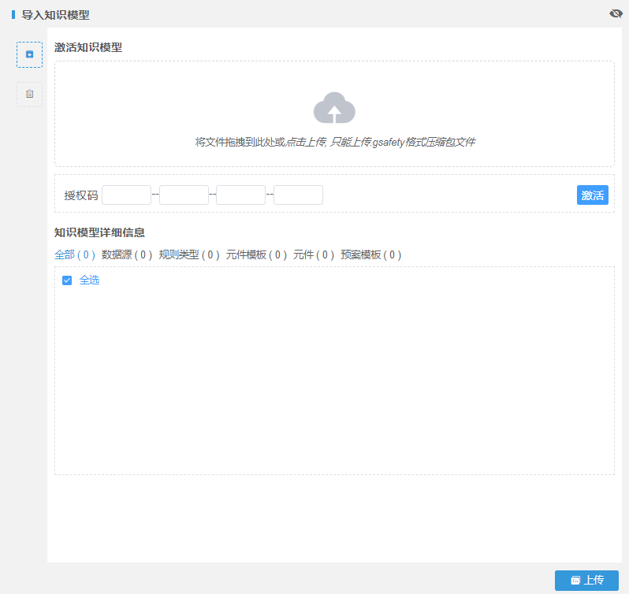

预案模型导入
系统支持通过本系统导出的预案模型数据的导入操作。
具体操作如下：
| 1. | 在主菜单中选择“预案管理→预案模型”菜单，进入“预案模型”页面。 |
| 2. | 单击〖导入知识模型〗页签。 |
| 3. | 单击〖导入知识模型〗按钮，弹出“导入知识模型”窗口。如Fig 13所示。
Fig 13 导入知识模型

|
| 4. | 将文件拖拽到上传处或者点击选择本地文件上传。 |
| 5. | 输入授权码，单击〖激活〗按钮。 |
| 6. | 单击〖上传〗按钮。 |
支持导入多个事件类型预案模型，1个事件类型（子类型）有1个预案模型的数据包。
导入新模型数据后，原来的数据会覆盖更新，但是使用旧的模型数据的预案文件会保持不变，其余均会被更新。
系统只能上传经由本系统导出的知识模型。